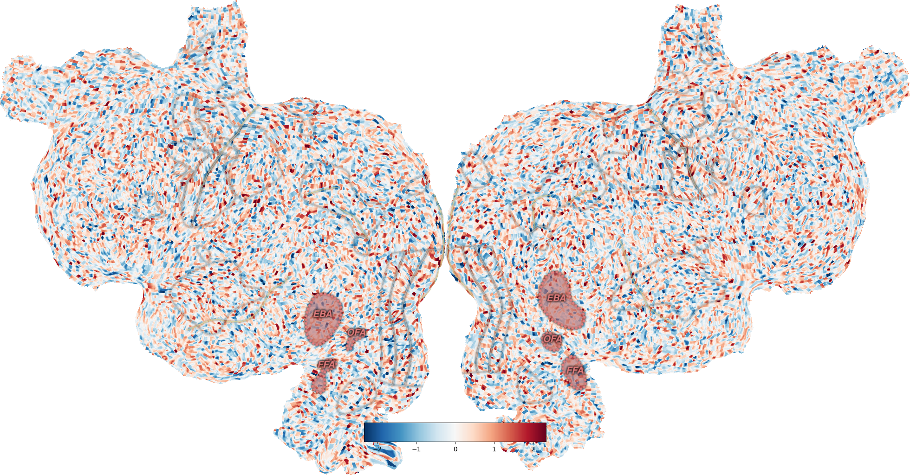

Note
Go to the end to download the full example code
Plot with advanced compositing¶
The way flatmap plotting works in pycortex is to create different image layers (data, ROIs, sulci, etc) and overlay each on top of the other. Usually, quickflat.make_figure() handles all this for you, but each layer can be manipulated independently for fancier effects with the quickflat.composite sub-module.
Background RRGGBBAA: ffffff00
Area 0:0:1960.5:1024 exported to 1960 x 1024 pixels (96 dpi)
Background RRGGBBAA: ffffff00
Area 0:0:1960.5:1024 exported to 1960 x 1024 pixels (96 dpi)
Background RRGGBBAA: ffffff00
Area 0:0:1960.5:1024 exported to 1960 x 1024 pixels (96 dpi)
import cortex
import matplotlib.pyplot as plt
# Create a random volume
volume = cortex.Volume.random(subject='S1', xfmname='fullhead')
# Create basic figure, with rois, labels, sulci all off
fig = cortex.quickflat.make_figure(volume,
with_curvature=True,
with_rois=False,
with_labels=False,
with_sulci=False)
# Add sulci in light yellow
_ = cortex.quickflat.composite.add_sulci(fig, volume,
with_labels=False,
linewidth=2,
linecolor=(0.9, 0.85, 0.5))
# Add all rois, with a particular color scheme:
_ = cortex.quickflat.composite.add_rois(fig, volume,
with_labels=False,
linewidth=1,
linecolor=(0.8, 0.8, 0.8))
# Highlight face- and body-selective ROIs:
_ = cortex.quickflat.composite.add_rois(fig, volume,
roi_list=['FFA', 'EBA', 'OFA'], # (This defaults to all rois if not specified)
with_labels=True,
linewidth=5,
linecolor=(0.9, 0.5, 0.5),
labelcolor=(0.9, 0.5, 0.5),
labelsize=20,
roifill=(0.9, 0.5, 0.5),
fillalpha=0.35,
dashes=(5, 3) # Dash length & gap btw dashes
)
plt.show()
Total running time of the script: (0 minutes 3.674 seconds)